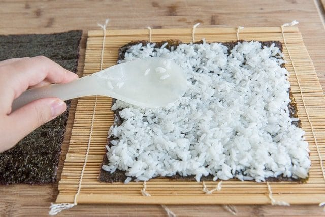
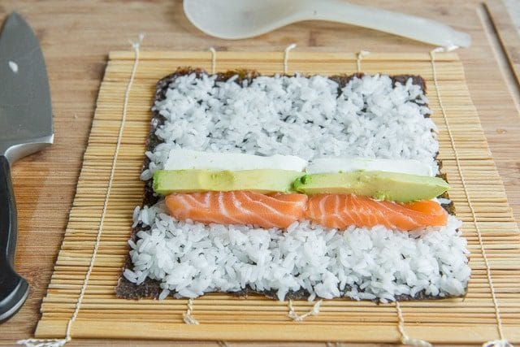

And you know what else? Sushi is really fun to make at home.
- Seaweed specific for sushi-making
- Prepared sushi rice
- Salmon
- Avocado
- Cream Cheese
Directions
Spread the seaweed with a layer of prepared sushi rice, and flatten gently with a rice paddle.
How to cut raw fish for sushi
Here is how I cut salmon for my sushi rolls. First, cut straight down through the filet, then cut that piece in half through the center so you have a small strip.

Place your desired ingredients onto the rice.
Roll it up tightly, using a bamboo mat. It’s a specific kitchen item, but you can get a decent one for less than $2 on Amazon, so I think it’s worth having.
If you don’t have one, you can sort of use parchment paper or plastic wrap, but you won’t be able to wrap it as tightly, so buy one if you plan to make sushi regularly.

Then use a sharp knife to cut the sushi roll into pieces. I don’t find it particularly better to use a serrated knife. Just make sure to use a sharp one!

What to serve with your sushi?
Now you’re ready to eat the rolls with some soy sauce, pickled ginger, and wasabi, as desired!
Back to Main Page